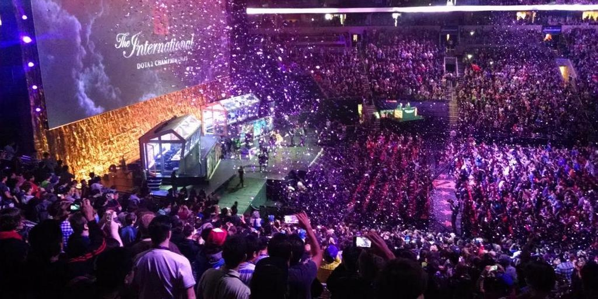

eSports Are Bringing the World Together

Crowd at an International event. Photo Credit: esportsedition.com
Political tension between nations creates daily worldwide headlines. Civil wars in the Middle East have spurred an international crisis between loss of life and millions of people being displaced. All the while, eSports are reshaping international competition, and more importantly, bringing the world together.
eSports first developed in the early 2000’s, centered around games like Counter-Strike, Quake, and Painkiller. They made their mark in the West in 2005 when a tournament hosted by the CyberAthlete Professional League boasted a prize pool of over 500,000 USD. Over the last few years people have really started to pay attention, largely due to massive prize pools. Saturday’s event carried a staggering prize pool of more than 24.5 million USD, with the winning team alone taking home nearly 11 million USD. While this is the largest prize pool eSports has ever seen, eSports are not historically money-shy.
Upon completion of Saturday’s final, 43 gamers from 18 different countries across the world have earned more than 1 million USD from prize pool alone. Most of these gamers have endorsement deals and professional contracts that they make their living off of nowadays as well, making prize pool money just an added bonus.
The International 7 (commonly referred to as TI7) was held at KeyArena in Seattle, Washington from August 2nd-12th. The seventh edition of the annual event hosted 18 Dota 2 teams consisting of players from 25 countries.
Of these 90 players, China had the strongest representation, accounting for roughly a quarter of all players. Even though China is well known for its heavily restricted and policed Internet, eSports are a very popular avenue for Chinese nationals to connect to the outside world.
The eventual winner, Team Liquid, is an incredible example of how eSports are borderless. All six people on the team (five players and one coach) are of different nationalities; Finland, Jordan, Bulgaria, Lebanon, Germany and South Korea. These gamers are more than acquaintances, they are friends and teammates. Just glancing at these countries, it seems likely that several of these players had to overcome language barriers to play on this team. eSports is one of those rare mediums that can bring five completely disparate people together in a very powerful way.
Team Liquid hoists the International 7 trophy at KeyArena in Seattle. Photo credit: VentureBeat
Defeating Stereotypes
The word sports is often associated with the word “athlete”. If there were a picture associated with athlete in the dictionary, it would probably depict a well-built, muscular person. People are hesitant to buy into the idea of eSports, and a big piece of that is due to the stereotypes surrounding the physical and social traits of gamers. They are often thought of as basement-dwelling hermits who live with their parents, which clashes heavily with our current idea of an athlete.
Before the Internet, these stereotypes that surround gamers may have been somewhat relevant. Nowadays, however, and especially in the case of eSports, they are false. Video games may not be a social activity on their own, but with the Internet and eSports, they have evolved into an incredibly social activity. Most gamers are members of online communities and those that play competitively are members of teams. Just like in physical sports, communication is crucial in these online games. Most of the time you are hundreds or even thousands of miles away from your teammates, and it takes a constant barrage of discussion to align on strategy, attack targets/objectives together, defend together, etc. Lapses in communication often results in a loss for your team.
The TI7 grand final that took place Saturday had streams available in English, Russian, Chinese and Spanish, to name a few. Not including the several thousand fans in live attendance at KeyArena, Game 3 of the grand final was officially estimated to have had over 5 million unique viewers. For comparison, the premier of Game of Thrones in 2011 had 2.2 million viewers in the United States.
Team Liquid’s Kuroky visibly emotional after his TI7 victory, which made him the highest earning player in the history of eSports at 3.35 million USD. Kuroky is one of the three players to attend all seven editions of the International since its inception in 2011. Photo credit: joindota.com
The reality is that eSports are redefining our modern idea of what an athlete is. Muscle and speed are being replaced by intelligence and leadership. These gamers, who may not live up to the dated definition of athlete we use today, are idols of millions of people around the globe. While they may not have been ‘athletically’ gifted at birth, eSports has provided an avenue for them to do something they love, on a stage, in front of millions of fans. Millions of fans behind a computer screen who watch in utter fascination and dream about the day that they may be on that stage.
eSports break down borders in ways that not even the Olympics can. It is the most powerful medium for international competition the world has ever seen. It does not matter where you were born, how old you are, how tall you are, how fast you can run, or how much your parents make. Anyone can follow their dream and fight for a spot on that stage.
Special thanks to Chris Dinkel for editing this article.
Supporting Numbers:
1. https://esportsearnings.com/players
2. https://en.wikipedia.org/wiki/Great_Firewall
3. http://www.trackdota.com/matches/3372726385
4. https://www.esportsearnings.com/players/3145-kuroky-kuro-takhasomi
5. http://tvbythenumbers.zap2it.com/sdsdskdh279882992z1/sunday-cable-ratings-nba-storage-wars-ax-men-khloe-lamar-the-killing-breakout-kings-sam-axe-game-of-thrones-much-more/89980/